CrisStack XS es una herramienta de DIT / gestión de datos de rodaje: copia las tarjetas de cámara y de sonido a varios destinos comprobando cada fichero con un checksum, ordena el material en una biblioteca con sus metadatos, permite revisarlo con el look aplicado, genera informes y prepara las copias de trabajo.
Todo cuelga de un proyecto. Su ficha se rellena una vez y se reutiliza en el offload, en la lista MHL y en la cabecera de los informes.
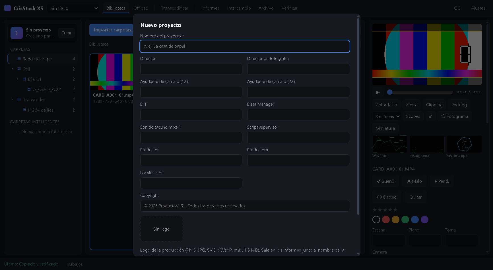
| Origen | Carpeta resultante en el destino |
|---|---|
| Tarjeta A001 (cámara A) | Mi Peli/Dia_01/Camara_A/A001 |
| Tarjeta de sonido SD001 | Mi Peli/Dia_01/Sonido/SD001 |
Las plantillas de cámara y de sonido se pueden cambiar con comodines ({project} {day} {camera} {type} {reel} {date}…); debajo ves un ejemplo de cómo quedará.
Cada tarjeta tiene su propia ficha con los pasos (copiar y verificar → lista MHL → registrar en la biblioteca → informes → transcodificar) y, mientras trabaja, te dice qué fichero está tratando, en qué paso («Copiando a 2 destinos», «Verificando destino 1 de 2»), cuántos MB lleva, la velocidad y cuánto tiempo falta aproximadamente. Lo que está copiándose sale arriba y el resumen también aparece en la barra inferior.
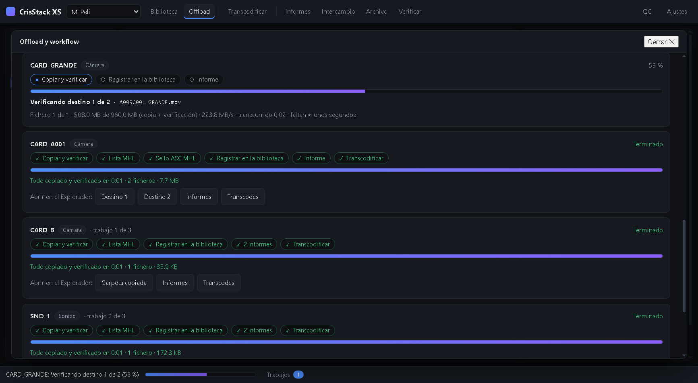
La ficha indica el tiempo total y el tamaño, y deja botones de acceso rápido para abrir en el Finder cada carpeta donde se han guardado las cosas: la copia en cada destino, los informes y los transcodes.
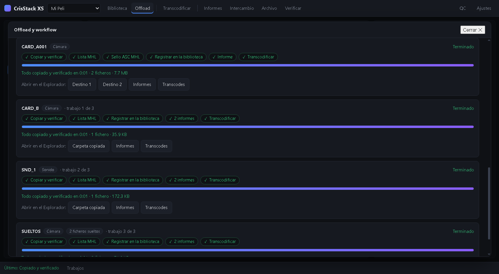
A la izquierda ves todo el material como un árbol de carpetas (proyecto → día → cámara/sonido → tarjeta…). Haz clic en una carpeta para ver sus clips, incluidos los de las subcarpetas.
| Vista | Para qué sirve |
|---|---|
| Lista | Tabla con todas las columnas de metadatos. Se ordena haciendo clic en la cabecera. |
| Miniaturas | Cuadrícula de miniaturas para revisar rápido. Doble clic para reproducir. |
| Carpetas | Resumen por carpeta: cuántos clips tiene, tamaño total, y cuántos son vídeo, audio o imágenes, más la duración. |
| Comparar | Los dos clips seleccionados, en cuadrícula o con cortina, con su look aplicado y sincronizados. |
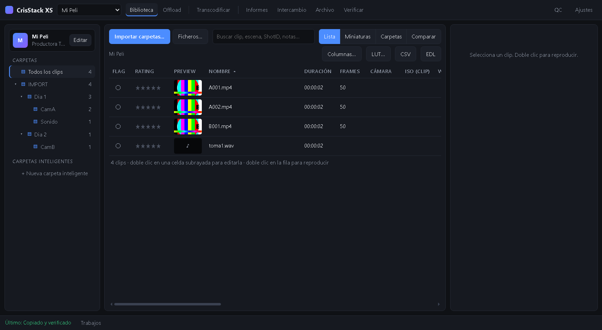
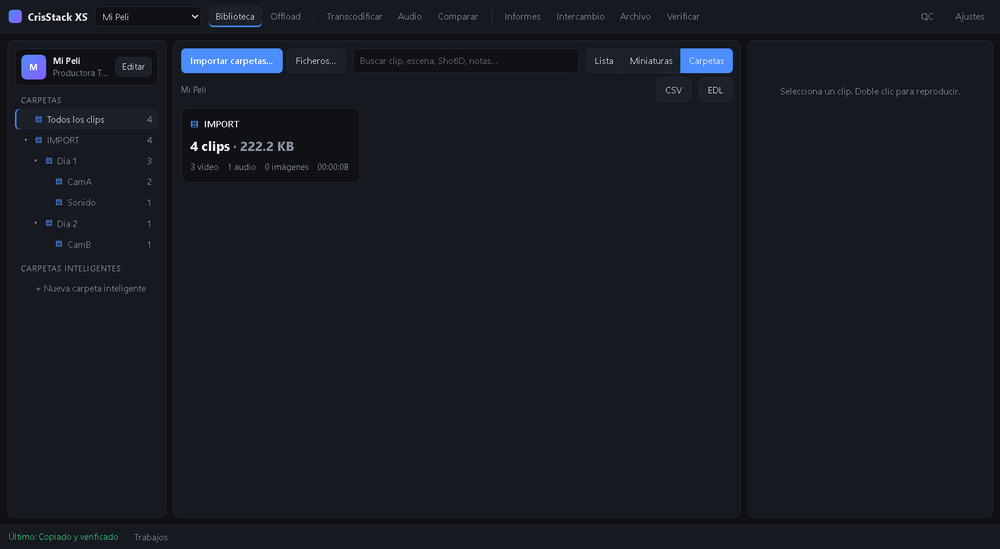
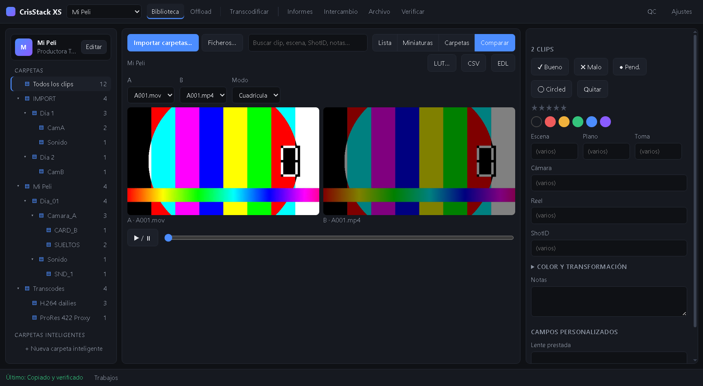
Miniaturas con look. Con la casilla «Miniaturas con look» (lista y miniaturas) cada clip muestra su miniatura ya con la LUT, el ajuste de color y la transformación que tiene aplicados, así ves el resultado de un vistazo. Se rehacen solas cuando cambias el look y se pueden desactivar. Para elegir otro momento como miniatura, usa el botón Miniatura del reproductor o el espacio Stills.
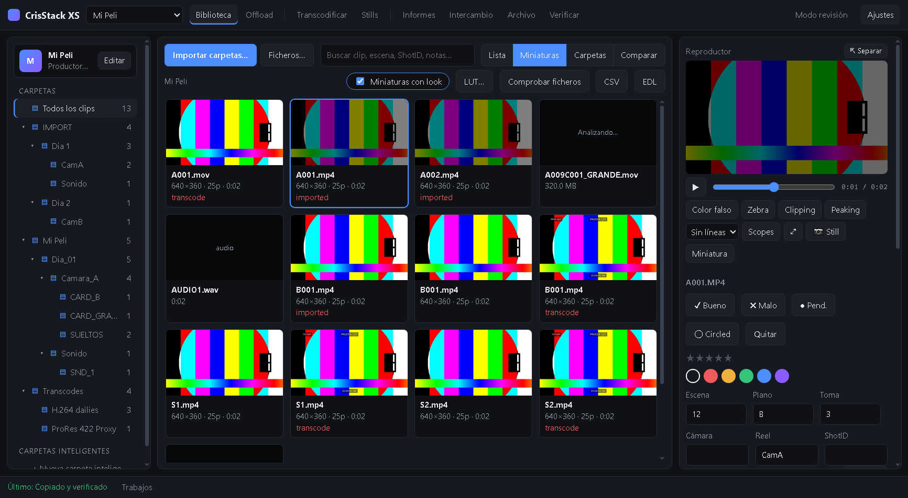
Comprobar ficheros. Este botón busca los clips cuyo fichero ya no está (disco desconectado, carpeta movida o borrada) y te deja quitarlos de la biblioteca. Al reproducir un clip sin fichero, la app te lo explica y te ofrece ir a Relink o quitarlo.
Pulsa Columnas… para elegir cuáles ver: flag (incluido circled), rating, preview, nombre, duración, frames, cámara, ISO, WB, shutter, shutter angle, sensor FPS, filtro ND, FPS del proyecto, modelo de lente, códec, tipo de fichero, resolución, fecha de registro, formato de TC, TC inicio y final, ShotID, reel/tape, fecha de grabación, fabricante, pistas y códec de audio, tamaño, información de look, Camera T, ISO nativo, espacio de color RAW, volúmenes, backups, escena, plano, toma y notas.
Doble clic en un clip para reproducirlo en el panel derecho. Debajo del reproductor tienes color falso, zebra, clipping y peaking, líneas de encuadre, scopes (waveform, histograma, vectorscopio), un botón para guardar un still con el look aplicado y otro para usar el fotograma actual como miniatura. El botón Modo revisión (QC, control de calidad) de la barra superior oculta el árbol de carpetas y da todo el espacio al reproductor: pensado para ir revisando las tomas una a una.
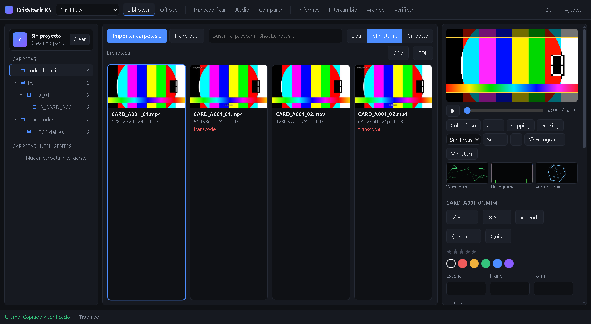
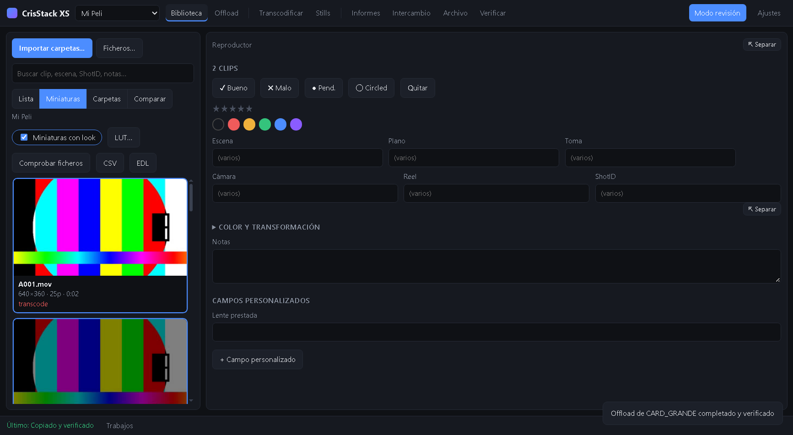
El reproductor y el panel de Color y transformación tienen un botón ⇱ Separar. Al pulsarlo se convierten en ventanas flotantes: arrastra la barra superior para moverlas, tira de la esquina inferior derecha para cambiar su tamaño y pulsa Acoplar para devolverlas a la columna derecha. La posición y el tamaño se recuerdan. Así puedes poner el vídeo grande en un lado de la pantalla y los controles de color en otro (o en otro monitor).
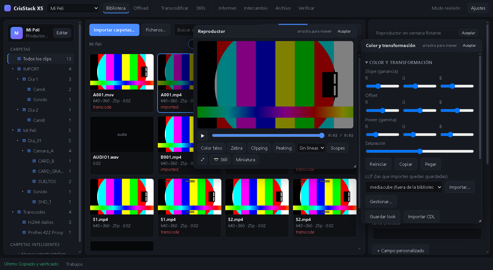
Las LUTs que importes con Importar… (en el panel de color, en LUT… de la biblioteca o en Transcodificar) se copian a la app y quedan guardadas: la próxima vez salen en la lista desplegable y no hace falta buscarlas en el Finder. Gestionar… permite renombrarlas, quitarlas o importar una carpeta entera de LUTs. Las LUT 1D se convierten solas a 3D.
El look de cada clip (LUT + ajuste) se usa también al transcodificar y al guardar stills. Puedes copiar y pegar looks entre clips, guardarlos en la biblioteca e importar o exportar CDL.
Selecciona clips en la biblioteca y abre Transcodificar (si no seleccionas ninguno se usan todos los de vídeo). La misma pantalla de ajustes aparece en el Offload cuando marcas «Transcodificar al terminar».
| Ajuste | Qué hace |
|---|---|
| Formato | ProRes Proxy/422/HQ, DNxHR LB/SQ, H.264 o H.265. |
| Píxeles | Tamaño de salida: original, 2160, 1440, 1080, 720, 540, 360 o una altura personalizada. |
| LUT | LUT extra para esta salida (además del look de cada clip). |
| Textos en pantalla | Timecode, nombre del clip y todos los textos propios que quieras. Cada uno tiene posición, tamaño, color y fondo; se colocan arrastrándolos sobre la previsualización. Los textos propios admiten datos del clip: {scene}, {shot}, {take}, {camera}, {reel}, {shotId}, {project}, {clip}, {date}… (hay botones para insertarlos). |
| Aplicar looks y transformaciones | Usa la LUT, el ajuste de color y el recorte/giro de cada clip. |
| Conservar el timecode | El fichero resultante mantiene el TC del original. |
| Subir a S3 | Sube los resultados al bucket de Ajustes, con un prefijo opcional. |
| Carpeta de salida | Dónde se guardan los transcodes. |
| Ajustes de transcode · metadatos | Marcas qué datos viajan dentro del fichero: proyecto, productora, director, DIT, copyright, escena, plano, toma, cámara, reel, ShotID, notas, ISO, WB, lente… y tus columnas propias. |
A la derecha ves cómo va a quedar un fotograma con todos los ajustes puestos (LUT, looks, recorte, tamaño y los textos). Elige el clip y el momento, y pulsa Actualizar previsualización; una vez generada, se actualiza sola al cambiar los ajustes. Sobre la imagen aparece un recuadro azul por cada texto: arrástralo (o muévelo con las flechas del teclado) y suéltalo donde quieras; la imagen se rehace con el texto en su nuevo sitio. Los textos usan una fuente incluida en la app, así que salen igual en Mac y en Windows.
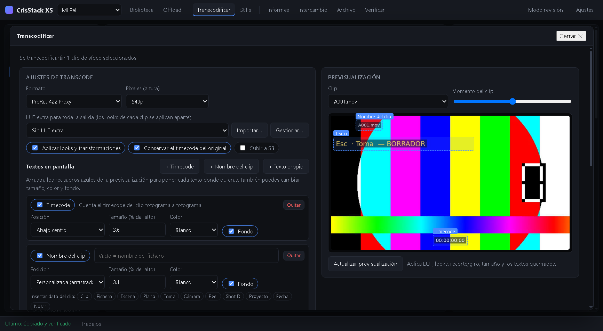
El resultado se registra en la carpeta Transcodes de la biblioteca con su información y tamaño reales, y una tabla por clip muestra «Correcto» o el motivo exacto del error. Un fichero solo se da por bueno si ffmpeg termina y tiene contenido. Los errores quedan además en transcode.log.
El espacio Stills (barra superior) sirve para sacar fotogramas de los clips y guardarlos agrupados por escena, con el look aplicado.
Documentos/CrisStack Stills/<proyecto>/Escena_<n>/ con un nombre como Esc12_PlB_T3_A001_10-00-04-12.jpg.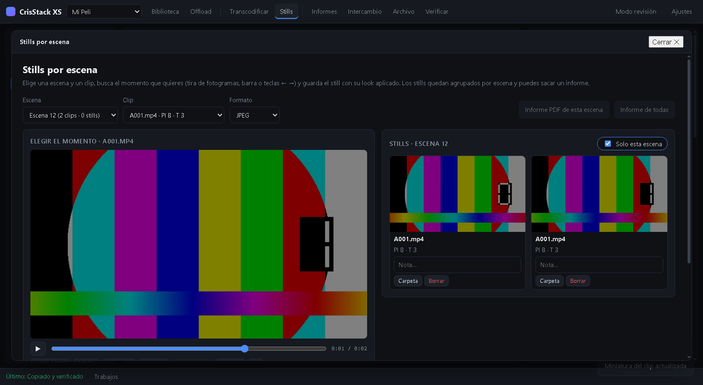
A la derecha ves los stills de la escena (o de todas): puedes escribir una nota, abrirlos grandes, mostrarlos en su carpeta o borrarlos. Informe PDF de esta escena e Informe de todas generan una hoja con los stills agrupados por escena, con la cabecera del proyecto. El botón 📷 Still del reproductor de la biblioteca también guarda en su escena.
En Informes puedes crear todos los que necesites. Cada uno es una configuración guardada: nombre, tipo (volumen/checksums, día de rodaje, lista de clips, miniaturas, contact print), formato PDF o HTML, tema claro u oscuro, título propio, qué clips incluye (toda la biblioteca, la selección, o los de cada offload) y, en la lista de clips, qué columnas salen (también las tuyas).
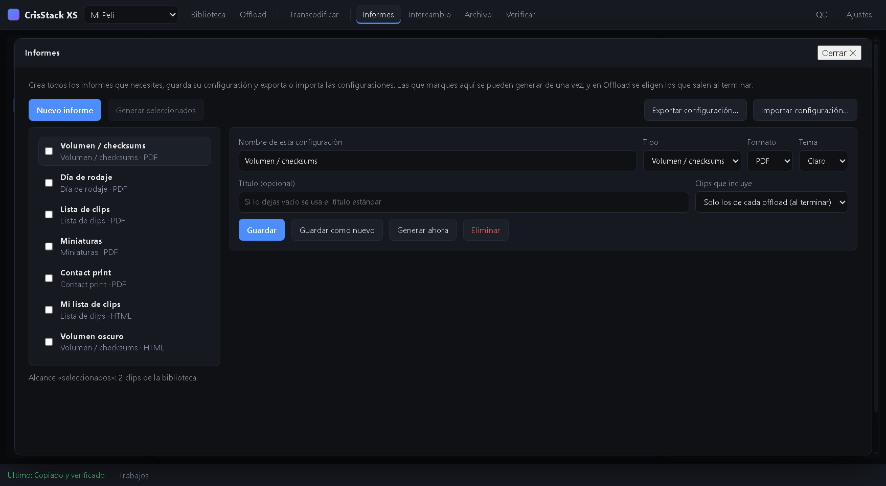
La cabecera de cada informe lleva el logo, la productora y el equipo del proyecto; al pie, el copyright.
| Tecla | Acción |
|---|---|
| G B H 0 | Marcar bueno, malo, pendiente o quitar marca (en la selección) |
| 1–5 | Valoración de 1 a 5 estrellas |
| ↑ ↓ | Clip anterior / siguiente |
| K / Espacio | Reproducir / pausa |
| J L | Retroceder 5 s / avance rápido |
| ← → | Un fotograma atrás / adelante |
| Esc | Cerrar la ventana abierta y volver a la biblioteca |
Los atajos de la biblioteca se pueden cambiar en Ajustes → Atajos de teclado.
| Síntoma | Qué hacer |
|---|---|
| macOS dice que la app «está dañada» o no deja abrirla | Clic derecho → Abrir. Si persiste, en Terminal: xattr -cr "/Applications/CrisStack XS.app" (la app no está firmada con certificado de Apple). |
| Un clip no se transcodifica | Mira la tabla «Último resultado» en Transcodificar: indica el motivo (fichero original no encontrado, no es vídeo, error de ffmpeg…). Si falta el original, usa Archivo → Relink. |
| Al reproducir sale «No se encuentra el fichero…» | El clip sigue en la biblioteca pero su fichero ya no está en su sitio (disco desconectado, carpeta movida o borrada). Conecta el disco, usa Archivo → Relink, o quítalo con Comprobar ficheros. |
| La previsualización de transcode da un error de filtro | Casi siempre es un ajuste de imagen no válido, p. ej. un recorte con ancho o alto 0. Desde esta versión el recorte tiene un mínimo y los errores de ffmpeg se explican en castellano; el detalle sale en el mensaje. |
| ISO, WB o lente salen vacíos | Esos datos solo aparecen si el fichero los incluye. Escríbelos a mano en la lista (doble clic). |
| Un offload termina con fallos de verificación | Revisa Trabajos y repite la copia del fichero afectado: el fallo indica que la copia no coincide con el original. |